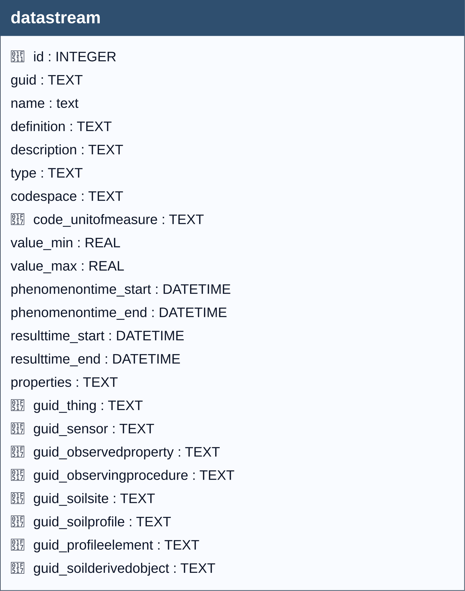

A Datastream groups a collection of Observations into a time series measuring the same ObservedProperties by the same Sensor for the same Thing and the same FeatureOfInterest. 1
SensorThings API 2.0 (23-019) (DRAFT),
version 23-019.
https://hylkevds.github.io/23-019/23-019.html
The JSON object resultType (SWE-Common AbstractDataComponent), which represents the formal description of the structure of the result attribute of observations in a Datastream, is managed by decomposing its fields within the datastream table. This approach enforces specific rules to ensure data consistency based on the type of result.
To simplify management, it has been defined that each Datastream can have only one result type (one-to-one relationship), avoiding the complexity of a one-to-many relationship as in OGC models. This choice allows mapping the fields directly into the datastream table.
Specifically, the fields Label and Definition are not duplicated in the datastream table because they are already defined in the ObservedProperty entity. Both are retrieved through the foreign key idobservedproperty present in datastream:
label corresponds to the name field of ObservedProperty.definition corresponds to the definition field of ObservedProperty.Since both idobservedproperty in datastream and the fields name and definition in ObservedProperty are mandatory, no data loss occurs, and it is always possible to correctly reconstruct the JSON resultType object.
iduom (unit of measure).codespace.value_min and value_max.value_max > value_min.iduom, value_min, and value_max.codespace.iduom, codespace, value_min, value_max.iduom, codespace, value_min, value_max.iduom, codespace.value_min and value_max.value_max > value_min.
Caution
A set of triggers ensures that the ResultType is populated in accordance with the rules described above, preventing the insertion or update of records that do not comply with those rules.
observation)When they run: AFTER INSERT / AFTER UPDATE / AFTER DELETE on the observation table.
What they do: whenever an observation is inserted, updated, or deleted, a set of triggers automatically recalculates the phenomenon time window of the related datastream, deriving it exclusively from the timestamps stored in the observation table. In particular:
datastream.phenomenontime_start = MIN(observation.phenomenontime_start) across all related observations;datastream.phenomenontime_end = MAX(COALESCE(observation.phenomenontime_end, observation.phenomenontime_start)) across all related observations.In this way, the datastream always reflects the earliest phenomenon start time and the latest phenomenon end time, as computed directly from the rows in the observation table.
Outcome of the checks: no application-level errors are raised; these triggers do not block operations and are solely responsible for keeping the temporal fields of the datastream in sync with the values stored in observation.
Note
this mechanism is fully automated. No manual intervention is required, as the system transparently handles the synchronisation of temporal attributes based on the current set of observations.
Warning
Records that do not comply with the defined constraints shall be rejected by the system and shall not be persisted in the GeoPackage.

datastream| Name | Type | Constraints | Description |
|---|---|---|---|
id |
INTEGER |
PRIMARY KEY | A unique, read-only attribute that serves as an identifier for the entity. |
guid |
TEXT |
Universally unique identifier. | |
name |
TEXT |
NOT NULL | A property provides a label for Datastream entity, commonly a descriptive name. |
definition |
TEXT |
The URI linking the Datastream to an external definition. Dereferencing this URI SHOULD result in a representation of the definition of the Datastream. | |
description |
TEXT |
The description of the Datastream entity. | |
type |
TEXT |
NOT NULL | The type attribute defines the type of the result and has the value Quantity. |
codespace |
TEXT |
The codespace defines the reference framework that specifies the set of valid values which can be used as results. It ensures that the meaning of each code is interpreted correctly within a given context. | |
code_unitofmeasure |
TEXT |
Foreign key to the Unit Of Measue table, code field.. | |
value_min |
REAL |
The minimum value defines the lowest numerical limit allowed within the data domain.. | |
value_max |
REAL |
The maximum value defines the highest numerical limit allowed within the data domain. | |
phenomenontime_start |
DATETIME |
The start date of the temporal interval of the phenomenon times of all observations belonging to this Datastream. This is usually generated by the server. | |
phenomenontime_end |
DATETIME |
The end date of the temporal interval of the phenomenon times of all observations belonging to this Datastream. This is usually generated by the server. | |
resulttime_start |
DATETIME |
The start date of the temporal interval of the result times of all observations belonging to this Datastream. This is usually generated by the server. | |
resulttime_end |
DATETIME |
The end date of the temporal interval of the result times of all observations belonging to this Datastream. This is usually generated by the server.. | |
properties |
TEXT |
mime type: ‘application/json’. A JSON Object containing user-annotated properties as key-value pairs. | |
guid_thing |
TEXT |
Foreign key to the Thing table, guid field. | |
guid_sensor |
TEXT |
NOT NULL | Foreign key to the Sensor table, guid field. |
guid_observedproperty |
TEXT |
NOT NULL | Foreign key to the Observed Property table, guid field. |
guid_observingprocedure |
TEXT |
Foreign key to the Observing Procedure table, guid field. | |
guid_soilsite |
TEXT |
Foreign key to the Soil Site table, guid field. | |
guid_soilprofile |
TEXT |
Foreign key to the Soil Profile table, guid field. | |
guid_profileelement |
TEXT |
Foreign key to the Profile Elemen table, guid field. | |
guid_soilderivedobject |
TEXT |
Foreign key to the Soil Derived Object table, guid field. |
In this table, the primary key is the id field (integer, auto-incrementing).
There is also a text field named GUID, which stores a UUID (Universally Unique Identifier) compliant with RFC 4122.
Although GUID is not mandatory at the schema level (it is not declared NOT NULL), its functional requirement is enforced by two triggers:
Any foreign keys (FK) from other tables reference this table’s GUID field rather than the id field, ensuring stable and interoperable references across datasets and database instances.
Note
GUID management is handled by database triggers, which ensure their automatic generation at the time of record insertion, without any user involvement.
datastream.guid_soilderivedobject → soilderivedobject.guid (ON UPDATE CASCADE, ON DELETE CASCADE)
soilderivedobject cascades to datastream.datastream.guid_profileelement → profileelement.guid (ON UPDATE CASCADE, ON DELETE CASCADE)
profileelement cascades to datastream.datastream.guid_soilprofile → soilprofile.guid (ON UPDATE CASCADE, ON DELETE CASCADE)
soilprofile cascades to datastream.datastream.guid_soilsite → soilsite.guid (ON UPDATE CASCADE, ON DELETE CASCADE)
soilsite cascades to datastream.datastream.guid_observingprocedure → observingprocedure.guid (ON UPDATE CASCADE, ON DELETE SET NULL)datastream.guid_observedproperty → observedproperty.guid (ON UPDATE CASCADE, ON DELETE CASCADE)
observedproperty cascades to datastream.datastream.guid_sensor → sensor.guid (ON UPDATE CASCADE, ON DELETE CASCADE)
sensor cascades to datastream.datastream.guid_thing → thing.guid (ON UPDATE CASCADE, ON DELETE CASCADE)
thing cascades to datastream.datastream.code_unitofmeasure → unitofmeasure.code (ON UPDATE CASCADE, ON DELETE CASCADE)
unitofmeasure cascades to datastream.observation.guid_datastream → datastream.guid (ON UPDATE CASCADE, ON DELETE CASCADE)| Name | Unique | Columns | Origin | Partial |
|---|---|---|---|---|
idx_ds_guid_observingprocedure |
No | guid_observingprocedure |
c |
No |
idx_ds_guid_soilsite |
No | guid_soilsite |
c |
No |
idx_ds_guid_soilprofile |
No | guid_soilprofile |
c |
No |
idx_ds_guid_profileelement |
No | guid_profileelement |
c |
No |
idx_ds_guid_soilderivedobject |
No | guid_soilderivedobject |
c |
No |
idx_datastream_type |
No | type |
c |
No |
For every trigger you will find:
datastreamguid / datastreamguidupdateWhen they run: AFTER INSERT / AFTER UPDATE OF guid
What they do: Assign GUID on insert when missing; prevent changing it later.
If the check passes: Insert writes GUID; unchanged updates proceed.
If the check fails: On change, abort with: Cannot update guid column.
datastream_bi_check_proc_prop_pair / datastream_bu_check_proc_prop_pairWhen they run: BEFORE INSERT / BEFORE UPDATE OF guid_observingprocedure, guid_observedproperty
What they do: If an observing procedure is supplied, verify that the pair (guid_observingprocedure, guid_observedproperty) is registered in obsprocedure_obsdproperty.
If the check passes: Statement proceeds.
If the check fails: Aborts with: Insert denied: the (guid_observingprocedure, guid_observedproperty) pair is not registered in obsprocedure_obsdproperty.
i_codespace / u_codespaceWhen they run: BEFORE INSERT / BEFORE UPDATE
What they do: If codespace is provided, ensure it exists in codelist.id for collection = 'Category'.
If the check passes: Statement proceeds.
If the check fails: Aborts with: Table datastream: Invalid value for codespace. Must be present in id of Category codelist.
datastream_bi_bounds_consistency / datastream_bu_bounds_consistencyWhen they run: BEFORE INSERT / BEFORE UPDATE
What they do: When both bounds are provided, require value_min <= value_max.
If the check passes: Statement proceeds.
If the check fails: Aborts with: Datastream bounds: value_min must be less than or equal to value_max when both are provided.
datastream_bi_count_bounds_are_integers / datastream_bu_count_bounds_are_integersWhen they run: BEFORE INSERT / BEFORE UPDATE (type-specific)
What they do: If type = 'Count' and bounds are provided, require each bound to be integral in value.
If the check passes: Statement proceeds.
If the check fails: Aborts with: Type Count: value_min must be an integer (numerically integral). or Type Count: value_max must be an integer (numerically integral).
datastream_bu_bounds_validate_observationsWhen it runs: BEFORE UPDATE OF value_min, value_max
What it does: For type IN ('Quantity','Count'), scan existing observation rows linked to this datastream. If tightening bounds would exclude any existing numeric result (result_real), block the update.
If the check passes: Update proceeds.
If the check fails: Aborts with: Bounds update rejected: some existing observations have result_real below the new value_min. or ... above the new value_max.
observation_bi_type_constraints / observation_bu_type_constraints)When they run: BEFORE INSERT / BEFORE UPDATE on observation
What they do: Read the linked datastream (guid_datastream) and enforce the shape of result fields and bounds:
result_real NOT NULL; result_text and result_boolean NULL; apply bounds when present.result_text NOT NULL; others NULL; result_text must exist in codelist collection equal to datastream codespace.result_boolean NOT NULL and in (0, 1); others NULL.result_real NOT NULL and integral in value; others NULL; bounds enforced like Quantity.result_text NOT NULL; others NULL.If the check passes: Insert/update proceeds.
If the check fails: The corresponding type-specific message is raised and the statement aborts.
Hylke van der Schaaf — Open Geospatial Consortium (OGC), ↩